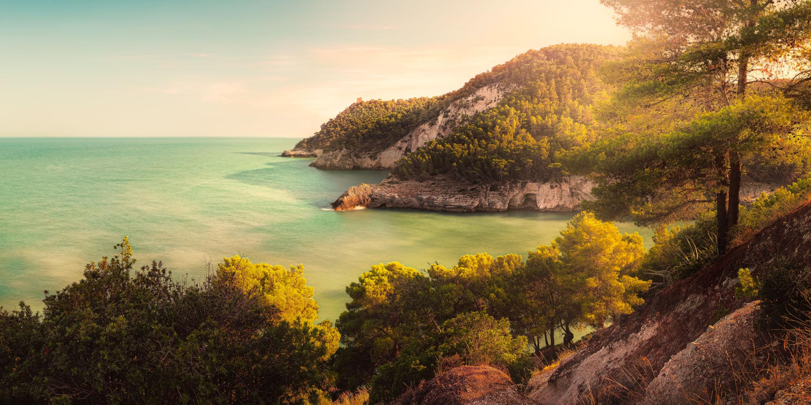

Parco Nazionale
Parco Nazionale del Gargano
Un territorio immenso di oltre 118.000 ettari che racchiude la Foresta Umbra, le mistiche ed incontaminate Isole Tremiti, e le lagune costiere di Lesina e Varano.